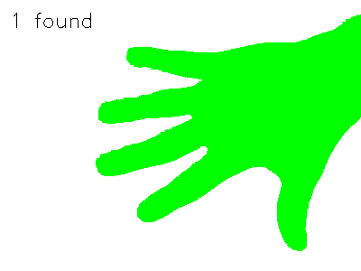
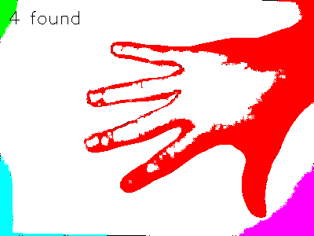
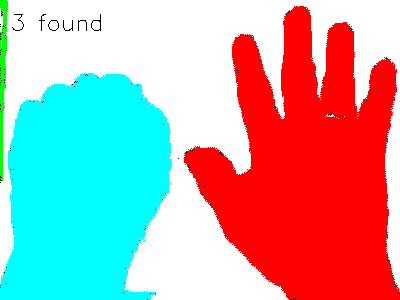
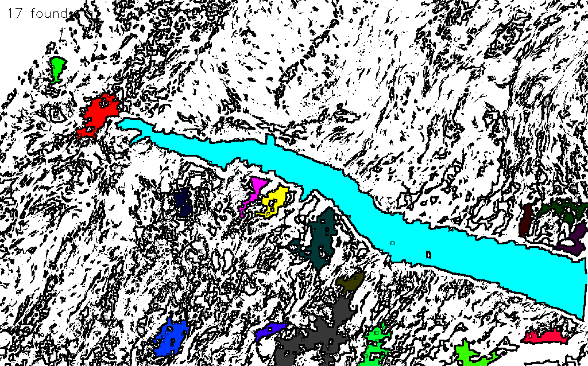
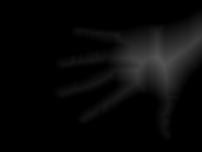
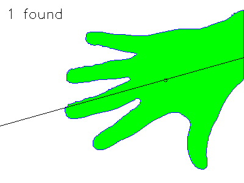
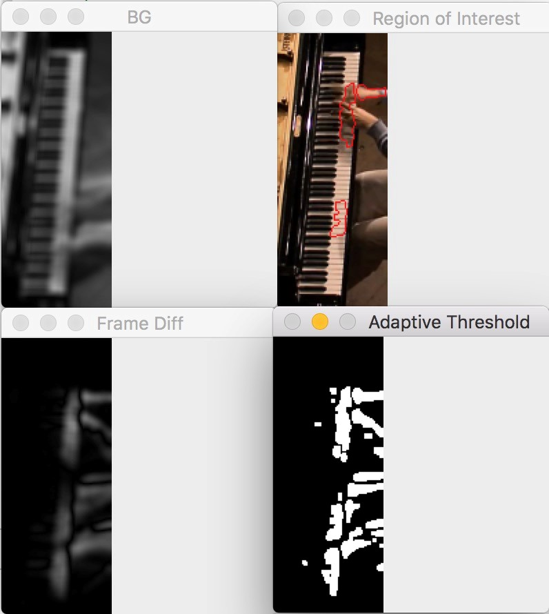
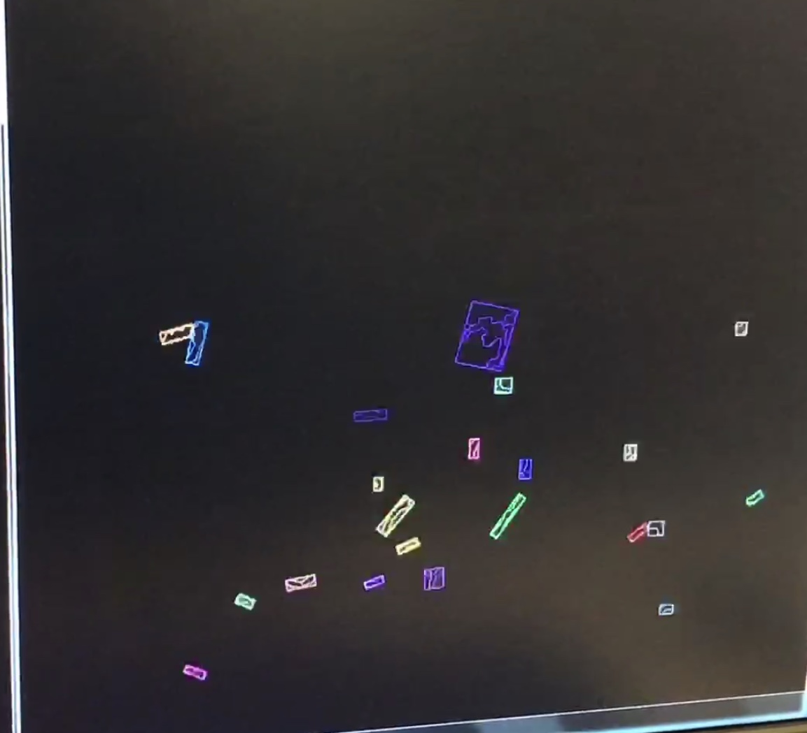
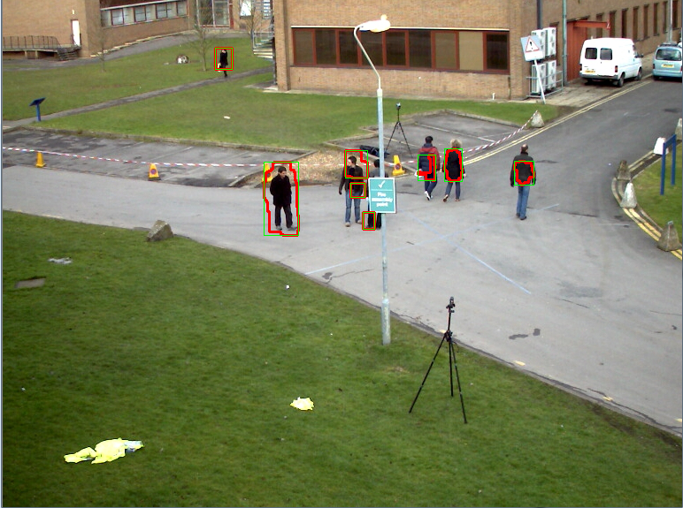

Problem Definition
The goal of this assignment was to design and implement algorithms that delineate objects in video images and analyze their shapes.
Method and Implementation
Give a concise description of the implemented method. For example, you might describe the motivation of your idea, the algorithmic steps of your methods, or the mathematical formulation of your method.
Stack-Based Connected Component Labelling
Taking the given suggestion into consideration we began by working the algorithm through an example like in class. Soon it was quite clear how the stack-based implementation worked (since it was quite similar to the DFS algorithm). Validating each pixels neighbours was confusing at first but we managed to create a generic helper function to validate each neighbour and push it onto the stack. We had initialized an array of colors that we used to assign to each component found. We used some morphological operations specific to every data image and also used the components area to ignore small objects.
In the process of designing this algorithm we also realized that it might be easier to merge the implementations of the shape analysis functions with this algorithm since properties like the area could be implemented simultaneously and other properties were specific to components and so it would help to have the component definition handy. We also created a struct object called ConnectedComponent which was used to contain information of every component found. A vector of ConnectedComponent data types held all of the components found.
Boundary Following Algorithm
We implemented the boundary following algorithm discussed in class that starts at a pixel and uses the Moore method to traverse and color the boundary. The entry point was stored in the ConnectedComponent struct saving image traversal time. We had a helper function that helped determine the direction of travel.
Medial Axis Transform
For finding the skeleton of the detected components we used the medial axis transform algorithm in which we passed over the labelled image twice, once from left to right and top to bottom and the second time from right to left and bottom to top. For each pass the algorithm set the values in a destination image as follows:
- First Pass : d(x,y) = min { p(x,y), p(x-1,y-1)+2, p(x,y-1)+1, p(x+1,y-1)+2, p(x-1,y)+1 }
- Second Pass: d(x,y) = min { p(x,y), p(x+1,y)+1, p(x-1,y+1)+2, p(x,y+1)+1, p(x+1,y+1)+2 }
Component Moment Information
Finding the properties of the components was fairly simple since they had mathematical formulae associated with them that were easy to implement. After finding the centroid and the orientation we drew the centroid and the axis of least inertia on the destination image.
Dataset 1: Finding Hands on the Piano
For this part we tested quite a few different methods but finally we concluded that the problem was quite tough and so instead of detecting her palms, we thought we might assuming that we would detect the general region in which her hands were. We began by resizing all the images to 1/4 the actual size and computing the background by taking an average of all the frames, converting it to grayscale and applying a Gaussian blur with a kernel of size 7x7. Then, for each frame we converted the frame to grayscale, blurred it with the same filter and performed absolute subtraction against the background. We then applied adaptive thresholding on the difference image with a ksize of 11x11 and a constant of -3. We then found the contours and highlighted the 2 largest contours. In most of the frames we are able to identify the general position of the artists hands.
Dataset 2: Counting Bats
In detecting the bats which have their wings open. The steps which we took are:
Dataset 3: Counting People
Each image is first preprocessed by smoothening using openCV's Gaussian blur, and then the mean difference image is subtracted from it to get a difference image. The resulting image is then divided into 4 regions based on the general
location of where the people in the image/video were found most often. Binary thresholding over the 4 separate regions of the image was then applied, followed by dilation and erosion, in various combinations,based on the requirement of each region.
The 4 regions are then appended to create a single binary image which is passed to OpenCV's findCentroid function that scan the image and provides the centroids (labels the binary objects). The centroid regions are then plotted using rectangles.
This method worked well for some images, but not so much for others, specifically when the people in the image formed groups, standing in front of each other, in which case they were counted as 1 person.
Another weakness of the method is that a woman with a lighter jacket is not detected until she reaches the third image region (from right to left). This could be improved with extra time to consider the detection of
high brightness levels through double thresholding in the first two regions (again, from right to left).
Experiments
Describe your experiments, including the number of tests that you performed, and the relevant parameter values.
Define your evaluation metrics, e.g., detection rates, accuracy, running time.
Results
List your experimental results. Provide examples of input images and output images. If relevant, you may provide images showing any intermediate steps. If your work involves videos, do not submit the videos but only links to them.
Object Shape Analysis | ||
| Trial | Source Image | Result Image |
| Image 1 |  |
 |
| Image 2 |  |
 |
| Image 3 |  |
 |
| Image 3 |  |
 |
| Image 1 Skeleton | |
 |
| Image 1 Centroid and Orientation | |
 | Dataset 3 - Piano Lady |  | |
| Dataset 2 - Bats |  | |
| Dataset 3 - Pedestrian Detection |  | |
Discussion
Discuss your method and results:
- Segmentation Algorithms Used:
- Dataset 1: For this algorithm we used adaptive thresholding given that there was directional lighting in the images and so a shadow effect. We applied adaptive thresholding to a specific region of interest and used contour features to identify the hands.
- Dataset 2: For this algorithm after converting the image to grayscale we used th OpenCV's adaptive thresholding, erosion, dilation functions. Furthermore, we used the contour function to find the contours which were then enclosed in a bounding box using the Rect function.
- Dataset 3: Each image is first preprocessed by smoothening using openCV's Gaussian blur, and then the mean difference image is subtracted from it to get a difference image. The resulting image is then divided into 4 regions based on the general
location of where the people in the image/video were found most often. Binary thresholding over the 4 separate regions of the image was then applied, followed by dilation and erosion, in various combinations,based on the requirement of each region.
The 4 regions are then appended to create a single binary image which is passed to OpenCV's findCentroid function that scan the image and provides the centroids (labels the binary objects). The centroid regions are then plotted using rectangles.
This method worked well for some images, but not so much for others, specifically when the people in the image formed groups, standing in front of each other, in which case they were counted as 1 person.
Another weakness of the method is that a woman with a lighter jacket is not detected until she reaches the third image region (from right to left). This could be improved with extra time to consider the detection of
high brightness levels through double thresholding in the first two regions (again, from right to left).
- We implemented the Stack-Based connected component algorithm. The implementation was quite simple once you understood the concept of how the algorithm worked. Initially we were trying the recrusive algorithm but as the assignment mentioned, we were getting stack overflow errors.
- After applying segmentation techniques we had experiment with various morphological operations such as dilation and erosion to come with the perfect balance that worked for us. We even used a Guassian blur when performing background subtraction to get a smoother difference image.
- For each data set that you worked with, discuss some properties of the image regions that you found (e.g. area, orientation, circularity) and what they reveal about the actual objects depicted in the images (for example, fist versus open hand). The description of each data set gives some suggestions.
- Some task are quite challenging to do given the lighting conditions. You need to use various methods together in order to get the best result and also need to make quite a few assumptions.